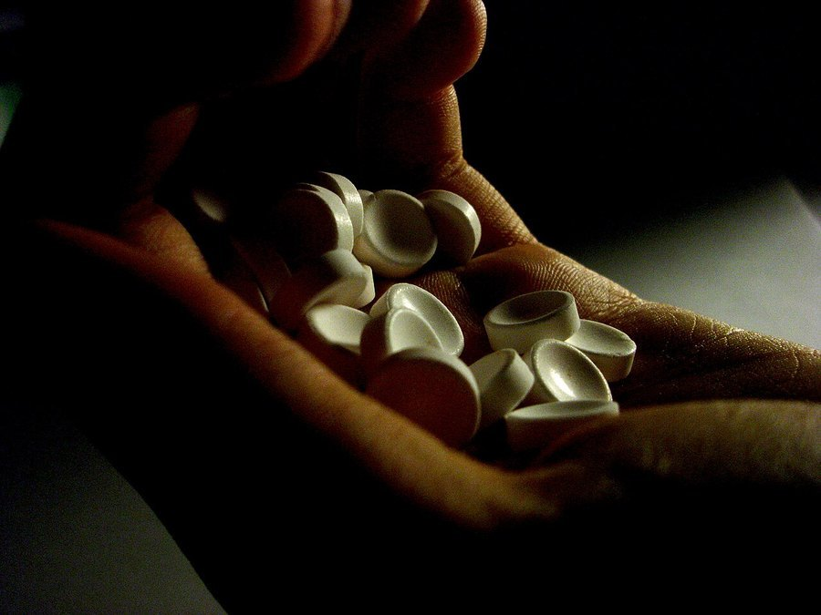

Eggs and Cholesterol: What the Latest Evidence Says
For decades the advice was simple: eggs raise cholesterol, so limit them. The science has moved on since then. Here's what eggs and cholesterol research actually shows today.

Key takeaways
- The strict 300 mg/day dietary cholesterol cap was dropped from U.S. guidelines back in 2016.
- Saturated fat affects blood cholesterol more than the cholesterol in eggs themselves, for most people.
- One large egg has around 185-200 mg of cholesterol, all of it in the yolk.
- The American Heart Association has described up to one egg a day as reasonable within a healthy diet for most people.
- People with diabetes or heart disease are often advised to be more conservative; this is a conversation for your own numbers, not a blanket rule.
Short version: for most healthy people, eggs are no longer considered a major driver of high blood cholesterol. Dietary cholesterol, the kind found in eggs, turns out to raise blood cholesterol less than scientists once assumed, mainly because the liver compensates by making less of its own. Saturated fat in the overall diet, think butter, bacon and fried food, has a bigger effect on LDL than the cholesterol in an egg yolk. That's why the old blanket "limit eggs" advice has largely given way to more individualized guidance.
Here's how the thinking changed, what the newest research actually shows, and who still has reason to be more careful.
Why did eggs get such a bad reputation for cholesterol in the first place?
The logic seemed straightforward decades ago: eggs are high in dietary cholesterol, and cholesterol in the diet should raise cholesterol in the blood. That led to the old U.S. guideline capping dietary cholesterol at 300 mg a day, a limit a single large egg could use up more than half of on its own. The problem was that this logic didn't hold up well under closer study. The body's cholesterol level is regulated mostly by the liver, which makes most of the cholesterol circulating in your blood itself and dials that production up or down partly in response to how much you eat. For most people, eating more dietary cholesterol leads the liver to make somewhat less, which blunts the expected spike.
So do eggs actually raise cholesterol?
For most healthy people, only modestly, if at all, and nowhere near what the old guidance implied. A 2025 randomized crossover trial published in the American Journal of Clinical Nutrition found that eating two eggs a day, within an overall diet low in saturated fat, actually lowered LDL cholesterol over five weeks rather than raising it. That trial was relatively small, and the result doesn't mean eggs are harmless on top of a diet already high in saturated fat, since the two eggs were eaten as part of a controlled, lower-saturated-fat pattern. The core point still holds: the overall dietary pattern eggs are eaten within matters more than the eggs in isolation.
| Then (older guidance) | Now (current thinking) |
|---|---|
| Cap dietary cholesterol at 300 mg/day | No fixed daily cap in current U.S. dietary guidelines (dropped 2016) |
| Treat eggs as a top cholesterol risk food | Saturated fat is the bigger lever for most people |
| Limit to 2-3 yolks a week | Up to about 1 egg/day described as reasonable by the AHA for most healthy adults |
| One-size-fits-all advice | More individualized: diabetes, existing heart disease change the calculus |
How many eggs a week is actually considered safe now?
There's no single number everyone agrees on, which is itself informative; it means the risk isn't as sharply defined as the old 300 mg rule implied. The American Heart Association has described up to one egg a day as reasonable within an overall healthy dietary pattern for most people without other risk factors. Some clinical reviews put the figure higher, up to roughly seven a week, for people without diabetes or existing heart disease. What most sources agree on is that the number matters less than what else is on the plate: eggs alongside vegetables and whole grains look very different, nutritionally, than eggs alongside bacon, buttered toast and hash browns.
Is it the yolk or the white that contains the cholesterol?
Entirely the yolk. Egg whites contain essentially no cholesterol and very little fat, which is why all-egg-white options exist for people specifically trying to cut dietary cholesterol. The tradeoff is that the yolk also carries most of the egg's nutrition: choline, vitamin D, B12, and lutein for eye health all live there. For most healthy people without a specific medical reason to avoid cholesterol, swapping to all-whites gives up real nutrition for a benefit that current research suggests is smaller than once assumed.
Does how you cook or pair eggs change the cholesterol impact?
The egg's own cholesterol content doesn't change with cooking method, but what surrounds it on the plate changes the overall saturated fat load a lot. Eggs fried in butter and served with bacon or sausage add significant saturated fat to a meal; boiled, poached, or eggs cooked in a small amount of olive oil with vegetables keep that number much lower while delivering the same egg nutrition. If cholesterol is a genuine concern for you, the cooking fat and the side dishes are a more useful place to focus than the egg count itself.
- Lower saturated-fat pairing: eggs with vegetables, whole-grain toast, avocado.
- Higher saturated-fat pairing: eggs with bacon, sausage, buttered white toast.
- Cooking method: boiled, poached or lightly sautéed in olive oil adds minimal saturated fat.
Who should still be more careful about eggs and cholesterol?
People with diabetes, existing cardiovascular disease, or a strong family history of early heart disease are generally advised to be more cautious, since some research has found a clearer association between egg intake and cardiovascular risk specifically in people with diabetes. This doesn't necessarily mean zero eggs, but it's a legitimate reason to talk with a doctor or dietitian about your own LDL and overall cardiovascular risk rather than relying on general population advice. If you already know your LDL and HDL numbers, that context makes the conversation far more useful than guessing.
What matters more than egg count for your cholesterol overall?
The bigger levers, by most current evidence, are the saturated fat and overall pattern of your diet, not any single food in isolation. Diets built around olive oil, vegetables, whole grains, legumes and fish, think the Mediterranean-style pattern, consistently show better cholesterol and cardiovascular outcomes than diets heavy in processed and fried foods, with or without eggs in the mix. Swapping butter for olive oil where you can is one of the more evidence-backed, low-effort changes available if cholesterol is a genuine concern.
Are eggs worth eating for reasons beyond the cholesterol debate?
For most people, yes. Eggs are an affordable source of complete protein, and they contain choline, a nutrient many people don't get enough of that supports liver function and is also being studied for its role in brain health, along with vitamin D, B12 and lutein. If cholesterol isn't a specific concern for you based on your own numbers, the nutritional case for keeping eggs in a varied diet is fairly strong, which is part of why the broader relationship between cholesterol and brain health is more nuanced than "high cholesterol equals bad" across the board.
Frequently asked questions
Do eggs raise cholesterol?
Dietary cholesterol in eggs has a smaller effect on blood cholesterol than once believed, because the liver adjusts its own cholesterol production in response. For most healthy people, moderate egg intake doesn't meaningfully raise LDL. Saturated fat in the overall diet has a bigger effect on blood cholesterol than the cholesterol in eggs themselves.
How many eggs a week are considered safe?
There's no single universal number, but major guidance has moved away from strict limits. The American Heart Association has described up to one egg a day as reasonable within a healthy dietary pattern for most people, while some clinical reviews suggest up to about seven a week is fine for most healthy adults. People with diabetes or existing heart disease are often advised to be more conservative.
Is it the egg yolk or the egg white that affects cholesterol?
The cholesterol is entirely in the yolk; egg whites contain essentially none. The yolk also carries most of the egg's nutrients, including choline, so swapping to all-whites trades away nutrition along with the cholesterol, which isn't necessary for most healthy people.
Why did the official guidance on eggs and cholesterol change?
Research accumulated over decades showing that for most people, dietary cholesterol has a smaller effect on blood cholesterol than saturated fat does, and that eggs eaten without a lot of saturated fat alongside them (butter, bacon, cheese) don't clearly raise cardiovascular risk. The strict 300 mg/day dietary cholesterol cap was dropped from U.S. dietary guidelines in 2016 for this reason.
Should people with high cholesterol avoid eggs entirely?
Not necessarily, but it's worth being more cautious and talking to a doctor or dietitian about your specific numbers. People with high LDL, diabetes, or existing cardiovascular disease are often advised to watch both dietary cholesterol and saturated fat more closely than the general population.
Does how you cook eggs matter for cholesterol?
The cooking method itself doesn't change the cholesterol in the egg, but what you cook it in and alongside does. Eggs fried in butter and served with bacon add significant saturated fat to the meal, while boiled, poached or eggs cooked in a small amount of olive oil keep the saturated fat load much lower.
Are eggs a good source of nutrition beyond cholesterol concerns?
Yes. Eggs are a relatively affordable source of complete protein, choline (important for liver and brain function), vitamin D, B12 and lutein for eye health. For most healthy people, the nutritional upside is a real factor to weigh against the modest dietary cholesterol they contain.
Related: LDL vs HDL cholesterol · Olive oil health benefits · Mediterranean diet for beginners · Cholesterol and brain health